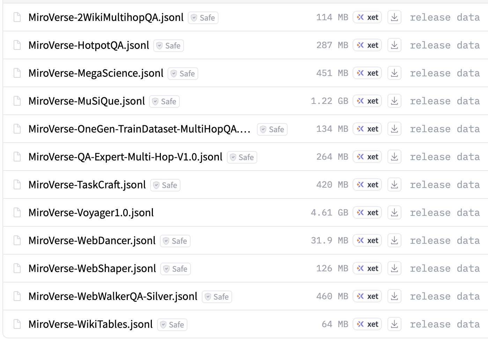

AGENT POST-TRAINING | SFT, DPO & STREAMING GRPO
用交互深度换参数量：MiroThinker 三阶段后训练拆解
在 GAIA、BrowseComp、Humanity's Last Exam（HLE）这类深度研究基准上，瓶颈往往不在模型参数里背住了多少冷门事实，而在能否在几百轮工具调用中持续获取有效证据、避免死循环并稳定收敛。MiroThinker v1.0 给出了一条清晰的路线：把有效算力从单纯堆参数和封闭长思考，转移到交互深度扩展（Interactive Scaling）上。
本文按数据、三阶段训练目标和系统工程拆解 MiroThinker 的完整后训练链路：先看它如何靠 Recency 截断与 MiroVerse 构造长轨迹，再依次推导 SFT 的掩码机制、DPO 加辅助 SFT 的稳定性设计、以及 Agentic GRPO 打破长尾拖累的流式异步 rollout，最后结合 8 项基准数据讨论它的优势与在开放预测任务上的边界。
1. 为什么 30B 模型能靠 600 轮交互追平闭源大模型？
纯推理模型依靠 test-time 内部长思考（Chain-of-Thought）解题，但封闭思考缺乏外部验证，在需要查证实时或多跳事实的任务里容易越想越偏。MiroThinker（基于 Qwen2.5 与 Qwen3-30B-A3B / 72B 初始化）支持 256K 上下文和单任务最多 600 轮工具交互，核心依托两项基础设计：
-
Recency-based Context Retention（近邻观察保留）：在 256K 窗口内跑几百轮搜索，如果把历史网页正文全留着，上下文很快爆掉。MiroThinker 选择保留完整的历史思考与动作序列（Thought + Action）以追踪决策脉络，但只保留最近 $K$ 轮（评测配置 $K=5$）的工具返回（Observation），更早的网页原文直接截断掩蔽。同时
scrape_and_extract_info内部会用轻量模型（如 Qwen3-14B）做条件抽取压缩，只把相关证据片段送回主循环。 - MultiDocQA 与 MiroVerse-v0.1 轨迹数据：先从高互链语料（Wikipedia、Common Crawl 等）沿超链接构图抽取跨文档事实，再通过约束遮蔽生成单文档无法解答的多跳问答；随后结合 12 个开源多跳数据集（MuSiQue、HotpotQA、WebWalkerQA、MegaScience、TaskCraft 等），由 GPT-OSS、DeepSeek-V3.1 等多款前沿模型同时走 Function Calling 与 MCP 两条协议合成完整执行轨迹。开源的 MiroVerse-v0.1 包含 147K+ 条样本、1.9B+ tokens、602K+ 次工具交互。

1.1 训练样本的角色划分与末尾 Meta 格式化指令
观察 MiroVerse 的原始 JSON 样本，整条多轮工具交互被编码成标准的 system / user / assistant 对话序列：
role="system"：注入全部可用 MCP 工具的 JSON Schema、XML 调用语法（<use_mcp_tool>）以及「每轮只调一个工具、禁止编造工具结果」等环境规则。role="assistant"：每轮同时包含规划/推理文本 $T_t$（例如先列 1/2/3 步骤）和工具调用块 $A_t$；结束探索后给出综合推理与初步答案。role="user"：第一轮放任务问题 $x$，中间各轮用来回填工具返回的观察文本 $O_t$。- 末尾追加一轮 Meta 格式化指令：样本最后两轮会再补一段 user 提示（「总结上述对话并按严格格式输出
\boxed{...}，不要重新推理，去掉多余标点」），对应 assistant 输出精炼结论。这类数据专门训练模型在超长上下文末尾准确抽取已定答案，减少因格式不规范丢分。
2. Stage 1 SFT：为什么必须屏蔽环境 Observation 的 Loss？
记初始任务为 $x$，多步交互轨迹为 $H = \{(T_t, A_t, O_t)\}_{t=1}^{T_H}$。SFT 阶段把预先录制好的整条对话串起来做自回归语言建模，训练时不真正执行外部工具，目标函数只对 assistant 产出的思考 $T_t$ 与动作 $A_t$ 计算负对数似然：
$$\mathcal{L}_{\text{SFT}}(\theta) = -\mathbb{E}_{(x, H)}\!\left[\sum_{t=1}^{T_H} \log \pi_\theta(T_t, A_t \mid x, H_{<t})\right]$$
具体到 token 级掩码（对应 MiroTrain sft_trainer.py）：
system、user（问题与工具返回 $O_t$）：loss mask = 0（参与前向注意力，模型能完整看到 $O_t$，但不计算交叉熵损失，防止模型去背诵网页文本）。assistant（$T_t$、$A_t$ 与最终答案）：loss mask = 1，让模型专注学会两件事：什么时候该调哪个工具并写对语法，以及拿到返回后如何整合成符合格式要求的结论。
3. Stage 2 DPO：只按结果对错配对，再加辅助 SFT 防漂移
SFT 跑通基础工具调用后，第二阶段在 SFT 模型采样出的轨迹上构造偏好对 $\mathcal{D}_{\text{DPO}} = \{(x_i, H_i^+, H_i^-)\}_{i=1}^{M}$。MiroThinker 在构对时做了一个务实的取舍：只以最终答案对错作为主判据，不人为强加固定规划长度、步数或模板启发式，因为硬编码轨迹风格会引入系统性偏置，妨碍跨领域扩展。过滤层面只清理明显残缺样本（要求 $H^+$ 推理连贯、含规划过程、答案正确；$H^-$ 同样产出合法答案格式，剔除重复、截断和乱码）。
标准 DPO 损失拉大正样本 $H^+$ 与负样本 $H^-$ 的对数似然间隔，同时用冻结的参考策略 $\pi_{\text{ref}}$（通常是 SFT checkpoint）防止当前策略 $\pi_\theta$ 偏离过远：
$$\mathcal{L}_{\text{DPO}}(x, H^+, H^-) = -\log \sigma\!\Bigl(\beta\bigl[\bigl(\log \pi_\theta(H^+ \mid x) - \log \pi_\theta(H^- \mid x)\bigr) - \bigl(\log \pi_{\text{ref}}(H^+ \mid x) - \log \pi_{\text{ref}}(H^- \mid x)\bigr)\bigr]\Bigr)$$但在几万 token 的长轨迹工具调用中，纯 DPO 只优化相对差值，经常出现 chosen 与 rejected 概率同时下降、导致 XML 工具格式退化或风格漂移的问题。因此 MiroThinker 在最终偏好目标里叠加了一项针对正样本 $H^+$ 的辅助 SFT 损失（Auxiliary NLL）：
$$\mathcal{L}_{\text{PO}}(\theta) = \mathbb{E}_{(x, H^+, H^-)}\bigl[\mathcal{L}_{\text{DPO}}(x, H^+, H^-)\bigr] + \lambda\, \mathcal{L}_{\text{SFT}}^{(+)}(\theta)$$两项损失的分工明确：DPO 把策略推离错误轨迹，辅助 SFT 约束生成分布停留在高质量轨迹和合法工具格式附近。
4. Stage 3 Agentic GRPO：用流式异步 Rollout 打破长尾拖累
离线 SFT 与 DPO 都受限于既有轨迹分布，第三阶段通过在线 GRPO（Group Relative Policy Optimization）让模型在真实搜索、网页抓取、Python 沙箱和 Linux 虚拟机环境里自主探索。把 RL 引入几百轮交互的 Agent 场景后，最先遇到瓶颈的是系统吞吐和轨迹噪声。
4.1 解决长尾 Straggler 问题：Streaming Rollout
单轮数学 RL 的样本生成耗时较均匀，而多轮 Agent RL 需要反复等待外部搜索与沙箱执行，轨迹完成时间呈严重长尾分布。如果采用传统同步批量采样（一个 iteration 发出 $N$ 条 rollout，等最慢那条跑完再更新参数），绝大多数 worker 会在后期空转等待，GPU 利用率急剧下降。
系统维护一个全局任务队列：哪个 worker 先跑完一条轨迹，就立刻从队列取下一条继续跑；一旦本轮收集够规定数量的完整轨迹，立刻触发策略更新，尚未跑完的慢轨迹标记为 unfinished 放回队列供下一轮继续。团队后续开源的 MiroRL 框架采用同类异步流式 rollout，实现了超过 2 倍的端到端训练加速。
4.2 轨迹清洗、奖励设计与 GRPO 目标
在算梯度之前，MiroThinker 增加了严格的 Trajectory Curation（轨迹清洗）：
- 过滤带噪声的「正确轨迹」：剔除连续 5 次以上网络/API 异常、反复重试同一动作或严重超时却碰巧答对的样本，避免把环境抖动当成有效策略强化进去。
- 过滤退化的「错误轨迹」：剔除单纯因漏写答案格式出错、陷入动作复读循环或未探索就提前终止的样本。
单条轨迹的组合奖励平衡结果正确性与格式约束：
$$R(x, H) = \alpha_c R_{\text{correct}}(H) - \alpha_f R_{\text{format}}(H)$$对每个问题 $x$，从当前策略 $\pi_\theta$ 采样一组 $G$ 条轨迹 $\{H_1, \dots, H_G\}$，以组内均值作为基线计算优势，并在 KL 约束下更新策略：
$$\hat{A}_i = R(x, H_i) - \frac{1}{G}\sum_{j=1}^{G} R(x, H_j)$$ $$\mathcal{L}_{\text{GRPO}}(\theta) = \mathbb{E}_{x \sim \mathcal{D}}\,\mathbb{E}_{H \sim \pi_\theta(\cdot \mid x)}\Bigl[\hat{A}(x, H)\cdot \log \pi_\theta(H \mid x) - \beta_{\text{KL}}\, D_{\text{KL}}\bigl(\pi_\theta(\cdot \mid x) \,\|\, \pi_{\text{ref}}(\cdot \mid x)\bigr)\Bigr]$$5. 实验结果：交互深度带来 8 至 10 分稳定增益，但预测不等于搜索
MiroThinker v1.0 在统一极简 ReAct 框架（温度 1.0、最大 600 轮、256K 上下文、观察保留预算 5、禁用 HuggingFace 防泄漏）下评测了 8 项公开深度研究基准（HLE 文本子集 2,158 题、GAIA 文本子集 103 题，其余全量测试）：
| 模型 / 系统 | HLE | BrowseComp | BC-ZH | GAIA | xbench-DS | WebWalker | FRAMES | SEAL-0 |
|---|---|---|---|---|---|---|---|---|
| DeepSeek-V3.2 | 27.2 | 40.1 | 47.9 | 63.5 | 71.0 | - | 80.2 | 38.5 |
| Claude-4.5-Sonnet | 24.5 | 19.6 | 40.8 | 71.2 | 66.0 | - | 85.0 | 53.4 |
| OpenAI-o3 | 24.9 | 49.7 | 58.1 | - | 67.0 | 71.7 | 84.0 | 17.1 |
| OpenAI-GPT-5-high | 35.2 | 54.9 | 65.0 | 76.4 | 77.8 | - | - | 51.4 |
| Tongyi-DeepResearch-30B | 32.9 | 43.4 | 46.7 | 70.9 | 75.0 | 72.2 | 90.6 | - |
| MiroThinker-v1.0-8B | 21.5 | 31.1 | 40.2 | 66.4 | 60.6 | 60.6 | 80.6 | 40.4 |
| MiroThinker-v1.0-30B | 33.4 | 41.2 | 47.8 | 73.5 | 70.6 | 61.0 | 85.4 | 46.8 |
| MiroThinker-v1.0-72B | 37.7 | 47.1 | 55.6 | 81.9 | 77.8 | 62.1 | 87.1 | 51.0 |
5.1 SFT 到 RL 的交互深度演化（MiroThinker-30B）
对比同一 30B 模型在 SFT 与 RL 后的轮次分布（原报告 Fig. 5），RL 显著拉长了有效探索深度，并在四个核心基准上带来 8 至 10 个百分点的稳定提升：
- BrowseComp：SFT
32.2 ± 1.1→ RL41.2 ± 1.3（+9.0） - BrowseComp-ZH：SFT
37.6 ± 2.2→ RL47.8 ± 1.1（+10.2） - HLE：SFT
24.1 ± 0.7→ RL33.4 ± 0.2（+9.3） - GAIA：SFT
65.4 ± 4.0→ RL73.5 ± 2.6（+8.1）
延伸观察：在未来预测（FutureX）这类开放任务里的适用边界
MiroThinker 擅长的是「目标事实已存在，需要高频搜索、抽取与反复交叉核验」的研究任务；但迁移到开放世界未来预测（如 FutureX）时，仍需看清两类差异：第一，预测不等于搜索，最后一步必须把冲突证据校准成概率判断，而不是找到某个确定词条；第二，时间可见性约束很关键，如果训练和推理没有严格截断未来信息，搜索能力越强反而越容易触发时间泄漏（MiroThinker v1.5 已专门补齐时间边界约束）。
参考资料
- MiroMind Team (2025). MiroThinker v1.0 Technical Report.
- Dataset: miromind-ai/MiroVerse-v0.1
- Training Code: MiroMindAI/MiroTrain